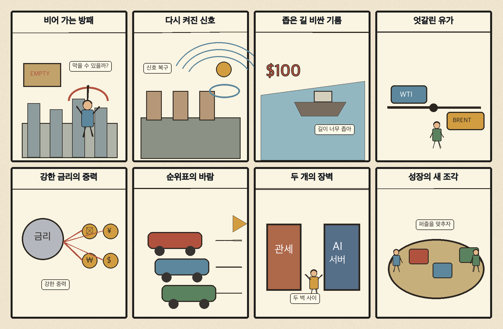
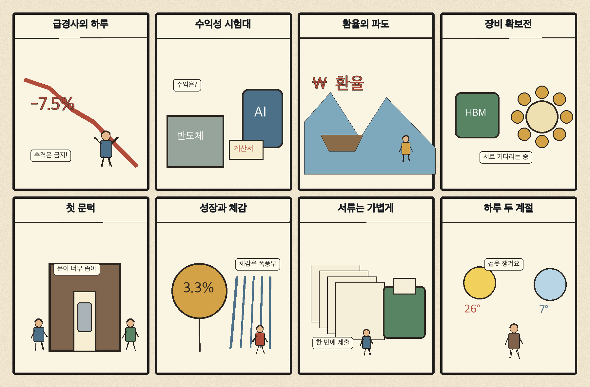

01
마이크로스트래티지 · 137.72→151.29달러 · +9.85%
내용요약 시가 대비 +9.85%로 조사 종목 중 상승 폭이 가장 컸습니다. 고변동 가상자산 연계주의 위험선호 회복이 반영된 움직임입니다.
예상여파 반등 폭이 큰 만큼 비트코인 변동과 레버리지 위험이 동시에 확대돼 국내 가상자산 연결주 추격에는 주의가 필요합니다.
MORNING_BRIEFING_20261016
작성 시각: 2026-10-16 06:34 KST · 직전 미국 정규장과 2026-10-16 KST 당일 공개 기사 기준
직전 미국 정규장인 10월 15일 뉴욕증시는 다우 +1.08%, S&P 500 +0.33%, 나스닥 +0.08%로 반등했습니다. 헬스케어와 경기민감 대형주가 지수를 받쳤지만 반도체 업종의 약세 지속 보도가 함께 나왔습니다. 전일 KOSPI와 KOSDAQ이 각각 7% 넘게 급락한 만큼 오늘은 미국 반등 자체보다 원·달러 환율, 외국인 현·선물 수급, 시초가 변동성 축소를 먼저 확인해야 합니다.
| 지수 | 종가 | 등락률 | 한국 증시 시사점 |
|---|---|---|---|
| 다우존스 | 52,177.69 | +1.08% | 위험선호 회복 신호지만 국내 환율·외국인 수급 확인 필요 |
| S&P 500 | 7,744.06 | +0.33% | 위험선호 회복 신호지만 국내 환율·외국인 수급 확인 필요 |
| 나스닥 종합 | 26,713.03 | +0.08% | 대형주 반등은 우호적이나 반도체 약세·국내 급락 후 변동성 경계 |
헬스케어 강세로 미국 증시는 반등했지만 나스닥은 +0.08%에 그쳤습니다.
전일 5,554.22 마감, 시가 대비로도 -2.09%였습니다.
호르무즈 불안과 정제시설 위험이 수입물가 부담을 키웁니다.
대규모 투자와 고객 금융 구조를 둘러싼 경계가 커졌습니다.
10월 15일 보고서는 미국 기술주 급락과 고유가·물가 압력, 국내 연속 약세 속에서 점수·확률·손익비 문턱을 모두 충족한 종목이 없어 공식 추천을 내지 않았습니다. 게시 당시 판단을 유지하며 급락 뒤 사후 종목을 추가하지 않습니다.
| 시장 | 종가 | 등락률 | 기준 |
|---|---|---|---|
| KOSPI | 5,554.22 | -7.57% | 10월 15일 · 시가 대비 -2.09% |
| KOSDAQ | 760.82 | -7.65% | 10월 15일 · 시가 대비 -3.01% |
| 다우존스 | 52,177.69 | +1.08% | 미국 10월 15일 정규장 |
| S&P 500 | 7,744.06 | +0.33% | 미국 10월 15일 정규장 |
| 나스닥 종합 | 26,713.03 | +0.08% | 미국 10월 15일 정규장 |
헬스케어 강세가 다우 반등을 이끌었다는 시장 보도입니다.
오라클은 시가 대비 +5.00%로 전일 급락 뒤 반등했습니다.
엑슨모빌 -2.21%, 옥시덴털 -1.83%로 시가 대비 약세였습니다.
KOSPI -7.57%, KOSDAQ -7.65%로 투매성 변동성이 확대됐습니다.
내용요약 시가 대비 +9.85%로 조사 종목 중 상승 폭이 가장 컸습니다. 고변동 가상자산 연계주의 위험선호 회복이 반영된 움직임입니다.
예상여파 반등 폭이 큰 만큼 비트코인 변동과 레버리지 위험이 동시에 확대돼 국내 가상자산 연결주 추격에는 주의가 필요합니다.
내용요약 시가 대비 +9.52%로 급반등했습니다. 미국 증시 위험선호 회복과 함께 가상자산 거래 플랫폼의 높은 베타가 나타났습니다.
예상여파 거래대금 기대에는 우호적이지만 규제·코인 가격 변화에 민감해 상승 지속을 단정하기 어렵습니다.
내용요약 시가 대비 +6.85%로 메모리 종목이 강한 반등을 보였습니다. 다만 당일 필라델피아 반도체 지수는 0.9% 하락했다는 보도가 나와 업종 전체와 차별화됐습니다.
예상여파 국내 메모리 심리에는 긍정적이지만 전일 국내 급락 뒤 단순 동조 반등을 매수 신호로 해석하지 않습니다.
내용요약 시가 대비 +5.00%로 전일 큰 폭 하락 뒤 일부를 회복했습니다.
예상여파 인공지능 인프라 투자와 자금조달 우려가 남아 있어 기술적 반등과 추세 전환을 구분해야 합니다.
내용요약 시가 대비 -2.21%로 조사 종목 중 낙폭이 컸습니다. 국제유가가 유종별 혼조를 보인 가운데 에너지 대형주가 약세였습니다.
예상여파 유가 상승만으로 정유·에너지 주가 방향을 단정하기 어렵고 정제마진·비용·시장 위험선호를 함께 봐야 합니다.
미국 증시 반등은 급락한 국내 시장의 공포를 일부 완화할 수 있지만 나스닥 상승은 +0.08%에 그쳤고 반도체 지수 약세 보도가 이어졌습니다. 전일 KOSPI는 종가 기준 -7.57%, KOSDAQ은 -7.65%로 변동성이 극단적으로 커졌습니다. 오늘은 반등 폭보다 원·달러 환율 안정, 외국인 선물 매도 둔화, KOSPI 5,450선 저점 이탈 여부와 반도체 대형주의 거래대금 정상화를 먼저 확인합니다. 장전 급등 예상 종목과 시초가 반등을 추격하지 않습니다.
오늘은 추천 없음 — 현금 관망
전일 KOSPI·KOSDAQ이 7% 넘게 급락해 정상적인 변동성·손익비 추정이 어렵습니다. 06:30 장전 시점에는 당일 시가와 호가 유동성이 형성되지 않았고, 전일까지의 수급·컨센서스 변화와 30건 이상 유사 조건 보정 표본을 함께 확보해 종합점수 75점·상승확률 60%·예상 손익비 1.5를 모두 통과한 종목이 없습니다.
관심 연결종목 미국 메모리 반등, 헬스케어, 장비·보안주는 관찰 대상일 뿐 매수 추천이 아닙니다. 급락 뒤 첫 반등과 가상자산 연계 고변동 종목을 추격매수하지 않습니다.
전일 저점 5,450.81 재이탈 여부와 프로그램 매매를 확인합니다.
고환율 완화와 외국인 현·선물 매도 둔화가 반등의 전제입니다.
미국 메모리 개별 반등과 업종지수 약세의 엇갈림을 점검합니다.
아침 7도·낮 26도, 중북부 약한 비에 대비합니다.
핵심 요약: 인공지능 투자는 데이터센터와 첨단 장비로 계속 확대되지만 클라우드 사업자의 재무 건전성, 고객 금융 구조와 투자 회수 속도가 핵심 검증 항목으로 부상했습니다. 동시에 미국 규제당국의 안전·개인정보 조사가 본격화되고 메모리·장비 수급 경쟁도 심화되고 있습니다.
내용요약 인공지능 클라우드 기업의 재무 우려가 이어지는 가운데 대형 사모자본은 인공지능 인프라에 대규모 투자를 이어간다는 당일 보도입니다. 투자 열기와 사업자별 자금조달 위험이 동시에 커지는 국면입니다.
예상여파 데이터센터 공급망에는 중장기 수요가 유지될 수 있지만 차입 구조, 고객 집중도와 현금흐름이 약한 사업자는 선별 압력이 커질 수 있습니다.
내용요약 미국 연방거래위원회가 오픈AI와 앤트로픽의 보안사고 대응, 인공지능 안전·개인정보·광고 관행을 살펴보며 경영진 소환을 추진한다는 보도입니다.
예상여파 생성형 인공지능 기업의 사고 공시·내부통제·광고 투명성 요구가 강화되고 기업 고객의 공급자 실사 비용도 늘어날 수 있습니다.
내용요약 엔비디아·AMD·브로드컴 등 칩 기업의 고객 금융 지원이 늘자 월가에서 인공지능 투자의 지속 가능성을 경계한다는 당일 보도입니다.
예상여파 매출 성장만큼 고객의 상환 능력과 거래 구조가 중요해져 고평가 인공지능 하드웨어의 변동성이 커질 수 있습니다.
내용요약 ASML과 TSMC의 최대 실적 속에 국내 반도체 기업이 첨단 장비 확보 경쟁에 직면했다는 당일 보도입니다. 공정 전환 속도와 장비 납기가 생산능력을 좌우합니다.
예상여파 장비·소재 공급망에는 수요가 이어질 수 있으나 대규모 선투자와 수율 안정 시차를 함께 봐야 합니다.
내용요약 인공지능용 메모리 수요가 자동차·가전용 범용 메모리 수급에도 영향을 미쳐 내후년까지 공급 부담이 이어질 수 있다는 당일 분석입니다.
예상여파 메모리 가격에는 우호적일 수 있지만 세트업체의 원가 부담과 수요 둔화, 공급 증설 전환 시점이 위험 요인입니다.
핵심 요약: 우크라이나의 방공 탄약 부족과 정유시설 공격 재개가 전쟁의 에너지·통신 연결고리를 다시 드러냈습니다. 호르무즈 불안은 고유가를 지지하고, 일본의 성장 순위 변화와 한일 통화스와프 연장은 아시아 경제의 구조 변화와 외환 안전망을 함께 보여줍니다.
내용요약 우크라이나의 패트리엇 요격미사일 재고 부족과 키이우 인명 피해를 전한 당일 보도입니다. 방공망 소진이 민간 인프라와 도시 안전을 다시 위협하고 있습니다.
예상여파 유럽의 방공 지원 부담과 군수품 조달 경쟁이 커지고 전쟁 장기화에 따른 재정·에너지 위험이 이어질 수 있습니다.
내용요약 위성통신 서비스 복구 직후 우크라이나가 러시아 정유시설을 타격했다는 당일 보도입니다. 에너지 인프라와 통신망이 전장의 핵심 연결고리로 부각됐습니다.
예상여파 러시아 정제·수출 차질 우려가 국제유가 위험 프리미엄과 유럽 에너지 안보 비용을 자극할 수 있습니다.
내용요약 중동 원유 수출 회복에도 호르무즈 불안이 남아 WTI는 6거래일째 상승하고 브렌트유는 약보합을 보였다는 당일 보도입니다.
예상여파 유종별 엇갈림에도 높은 유가가 길어지면 운송·항공·화학 비용과 각국 물가·금리 경로에 부담입니다.
내용요약 일본 경제 규모가 영국에도 밀려 60년 만에 세계 5위권 밖으로 내려갈 수 있다는 전망을 다룬 당일 보도입니다.
예상여파 인구·생산성·환율의 구조 문제가 아시아 공급망과 내수 전략 재편을 재촉하고 한국 기업의 시장 다변화 필요성도 커질 수 있습니다.
내용요약 미국 고금리와 일본의 통화정책 정상화 속에 한국과 일본이 100억달러 규모 통화스와프를 연장했다는 당일 보도입니다.
예상여파 외환시장 급변 시 안전망을 유지한다는 신호로 작용하지만 실제 환율 안정은 달러 흐름과 무역수지에 달려 있습니다.

핵심 요약: KOSPI 7.57% 급락으로 금융시장 불안이 커진 가운데 성장률 전망 상향과 체감 경기 사이의 간극이 부각됐습니다. 인공지능발 청년 채용 문턱, 보육 신청 간소화와 큰 일교차는 고용·생활 정책의 당일 점검 과제입니다.
내용요약 10월 15일 KOSPI가 7.57% 급락해 5,554.22로 마감한 흐름과 반도체 중심 시장의 불안을 짚은 당일 보도입니다.
예상여파 변동성 확대와 외국인 수급 이탈이 이어질 수 있어 반등 시에도 시초가 추격보다 거래대금·환율 안정 확인이 우선입니다.
내용요약 국제통화기금이 한국의 올해 성장률 전망을 3.3%로 상향했다는 당일 보도입니다.
예상여파 거시 성장률 개선 기대가 내수 체감과 증시 변동성 완화로 이어지는지 수출·소비·고용의 세부 흐름을 함께 봐야 합니다.
내용요약 조사에서 인공지능 시대 청년의 첫 일자리 취업이 감소할 것이라는 응답이 77%였고 증가 전망은 5.2%에 그쳤다는 당일 보도입니다.
예상여파 신입 채용 축소에 대응해 직무 전환교육과 기업의 초기경력 채용 유인, 인공지능 보완형 업무 설계가 시급해질 수 있습니다.
내용요약 어린이집·유치원 신청 일정을 미리 안내하고 증빙서류 등록·제출을 간소화한다는 정책 안내입니다.
예상여파 보호자의 행정 부담과 누락 위험이 줄 수 있으며 실제 이용 과정의 시스템 안정성과 취약계층 접근성이 중요합니다.
내용요약 아침 기온은 7도까지 낮고 낮 최고기온은 26도에 이르러 일교차가 크게 벌어진다는 당일 예보입니다.
예상여파 출근길 겉옷과 체온 관리가 필요하며 중북부 약한 비와 주말 강수 가능성에 이동 계획을 조정해야 합니다.
